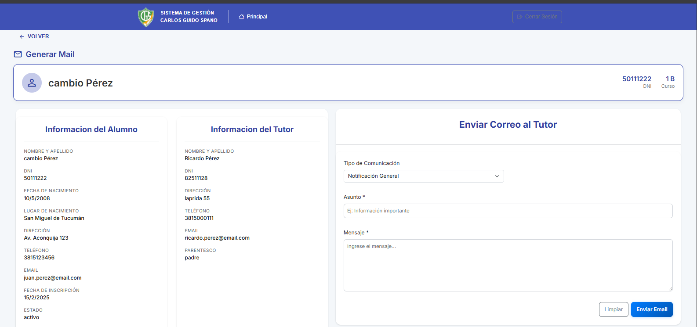
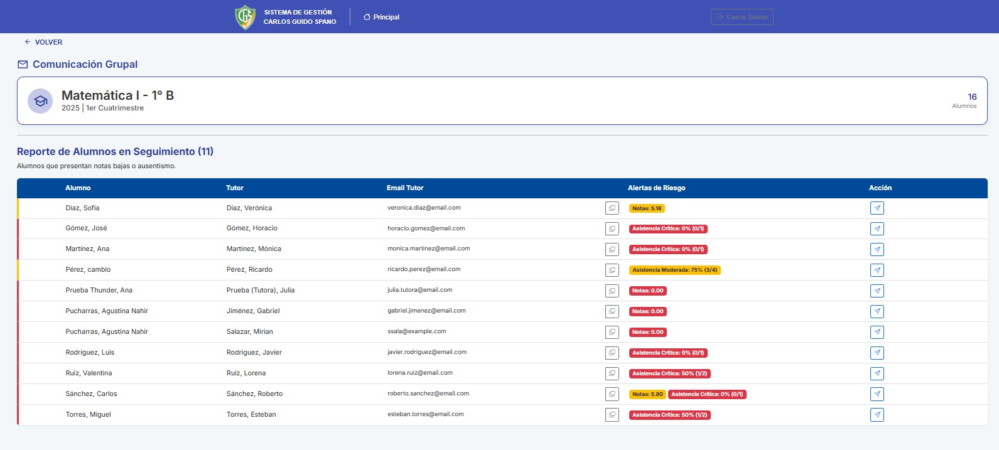
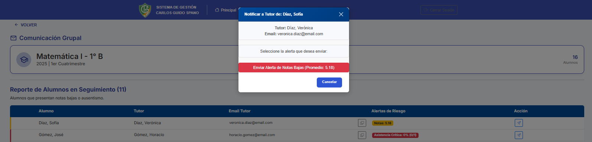

1. Introducción
¡Bienvenido al SGA del Instituto Carlos Guido Spano!
¿Qué es el SGA?
El Sistema de Gestión de Alumnos (SGA) es una aplicación web diseñada para que el personal docente y las autoridades del instituto puedan gestionar eficientemente las asistencias, notas, exportar documentos oficiales y mantener una comunicación fluida con los padres o tutores de los alumnos.

¿Para quién es este manual?
Este manual está dirigido al personal de Autoridades (directivos, secretarios) y al Cuerpo Docente (profesores) del instituto. Ciertas secciones pueden aplicar solo a un tipo de rol.
Cómo usar este manual
Este documento describe las funciones clave del sistema. Puede usar el menú de navegación de la izquierda para saltar a la sección que necesite.
2. Primeros Pasos
2.1. Requisitos del sistema
- Navegadores web compatibles (Chrome, Firefox, Safari, Edge - últimas versiones).
- Conexión a internet estable.
- El sistema está optimizado para un funcionamiento óptimo de hasta 20 usuarios conectados de forma simultánea.
2.2. Acceso al Sistema
Cómo acceder: Ingrese la URL provista por el
instituto en su navegador. (ej.
https://instituto-cgs.sistema.com)
Iniciar Sesión:
- Recibirá sus credenciales (usuario y contraseña) por parte de la administración del instituto.
- Ingrese a la URL provista en su navegador.
- Introduzca su Usuario y Contraseña.
- Haga clic en "INICIAR SESIÓN".
2.3. Recuperar Contraseña
Si olvidó su contraseña, siga estos pasos:
- En la pantalla de login, haga clic en "¿Olvidó su contraseña?"
- Ingrese su email institucional registrado
- Revise su correo y siga las instrucciones del email recibido
- Establezca una nueva contraseña
- Si no recibe el email, contacte a la administración
3. Recorrido por la Interfaz - Admin
La navegación principal del sistema se centra en la pantalla "Consulta Académica", que es la primera pantalla que verá después de iniciar sesión.
Barra de Navegación Superior
- Principal: Lo lleva de regreso a la pantalla "Consulta Académica".
- Cerrar Sesión: Cierra su sesión y lo regresa a la pantalla de login.
Pantalla "Consulta Académica"
Esta pantalla le ofrece cuatro formas principales de navegar por el sistema:
- Consulta por Alumno: Le permite buscar un alumno específico (generalmente por DNI y Año) para acceder a su perfil individual.
- Consulta por Curso: Le permite buscar un curso/materia específico para ver listados de clase y realizar acciones grupales (como cargar notas o asistencias).
- Envio de Email: Le permite el envio de mails por un curso/materia específico
- Gestion de datos: Le permite realizar las altas de ALUMNOS | DOCENTES | AÑO LECTIVO | MATERIAS | CURSOS | ASIGANCION DE CURSOS .
Dashboard de Gestión Datos
Para usuarios con permisos de administración, existe un dashboard central que permite acceder rápidamente a todas las funciones del sistema:
- Año Lectivo: Configuración de períodos académicos
- Docentes: Gestión del personal docente
- Alumnos: Administración de estudiantes
- Cursos: Creación y configuración de cursos
- Materias: Catálogo de asignaturas
- Asignación Materia-Curso: Planes de estudio

Perfil de Alumno
Al consultar por un alumno, accederá a su perfil, donde verá las "Acciones Disponibles" para ese alumno, tales como:
- Info Alumno
- Ver Asistencias
- Estado Académico
- Historial de Comunicaciones
- Certificados y Actas
- Generar Mail

Perfil del Curso
Al consultar por un curso, accederá a su perfil, donde verá las "Acciones Disponibles" para esa clase, tales como:
- Ver Listado de Alumnos
- Resumen de Calificaciones
- Resumen de Asistencias
- Carga de Calificaciones
- Carga de Asistencia
- Comunicación Grupal

4. Procedimientos Paso a Paso
En esta sección encontrará instrucciones detalladas para realizar las tareas más comunes en el sistema.
📝 Seleccione un procedimiento específico del menú lateral
Use el menú de navegación a la izquierda para acceder a procedimientos detallados de:
- Crear Alumno: Alta de nuevos estudiantes en el sistema
- Crear Año Lectivo: Configuración de períodos académicos
- Crear Curso: Configuración de cursos
- Crear Materia: Gestión de asignaturas
- Asignar Materia a Curso: Planes de estudio
- Crear Docente: Gestión de personal docente
- Cargar Notas: Registro de calificaciones
- Cargar Asistencia: Control de presencia/ausencia
- Enviar Comunicación: Contacto con tutores
- Generar Certificados: Documentación oficial
4.1. Procedimiento: Crear un Nuevo Alumno
⚠️ Solo para Personal Autorizado
Este procedimiento solo puede ser realizado por usuarios con permisos de administración.
Paso a Paso - Alta de Alumno
-
Desde el menu de Consulta Academica
Desde el Dashboard de Consulta Académica, haga clic en "Gestion de datos" -
Iniciar creación de nuevo alumno
Haga clic en el botón Tarjeta "Alumno" -
Click en boton de Agregar alumno
Haga clic en el botón "+ Nuevo Alumno"
-
Completar datos personales
Complete todos los campos obligatorios (*):- DNI: Número de documento
- Nombre y Apellido: Nombre completo del alumno
- Fecha de Nacimiento: DD/MM/AAAA
- Lugar de Nacimiento: Ciudad, Provincia
- Domicilio: Dirección completa
- Email: Correo electrónico
- Teléfono: Número de contacto
-
Datos académicos
Seleccione o complete:- Fecha de Inscripción: Fecha de registro
- Estado: Activo/Inactivo
- Curso: Asignar a curso correspondiente
- Año lectivo: Período académico
-
Datos del Tutor
Complete la información del tutor/responsable:- Nombre y Apellido del Tutor
- DNI del Tutor
- Parentesco: Madre, Padre, Tutor
- Teléfono de contacto
- Email del tutor
-
Guardar registro
Haga clic en "Guardar" para finalizar el proceso
💡 Consejos Importantes
- Verifique que el DNI no esté duplicado en el sistema
- Complete todos los campos marcados como obligatorios (*)
- Guarde la información del tutor para futuras comunicaciones
- Revise los datos antes de guardar
4.2. Procedimiento: Crear Año Lectivo
⚠️ Solo para Personal Autorizado
Este procedimiento solo puede ser realizado por usuarios con permisos de administración.
Paso a Paso - Creación de Año Lectivo
-
Acceder a Gestión de Datos
Desde el Dashboard, haga clic en "Gestion de datos" -
Seleccionar Año Lectivo
Haga clic en la tarjeta "Año Lectivo" -
Iniciar creación
Haga clic en el botón "+ Nuevo Año Lectivo"
-
Completar datos del año lectivo
Complete los campos obligatorios:- Año *: Ej: 2025
- Fecha de Inicio *: DD/MM/AAAA
- Fecha de Fin *: DD/MM/AAAA
- Estado: Planificación, Activo, Finalizado
-
Guardar año lectivo
Haga clic en "Guardar" para crear el año lectivo
💡 Información Importante
- El año lectivo debe crearse antes de configurar cursos y materias
- Verifique que las fechas no se solapen con otros años lectivos
- El estado "Activo" permite realizar operaciones en ese período
4.3. Procedimiento: Crear Curso
⚠️ Solo para Personal Autorizado
Este procedimiento solo puede ser realizado por usuarios con permisos de administración.
Paso a Paso - Creación de Curso
-
Acceder a Gestión de Datos
Desde el Dashboard, haga clic en "Gestion de datos" -
Seleccionar Cursos
Haga clic en la tarjeta "Cursos" -
Iniciar creación
Haga clic en el botón "+ Nuevo Curso"
-
Completar datos del curso
Complete los campos obligatorios:- Nombre *: Ej: "Primero A"
- Año *: Nivel (1, 2, 3, etc.)
- División *: Letra (A, B, C, etc.)
- Turno *: Mañana, Tarde
- Estado: Activo, Inactivo
-
Guardar curso
Haga clic en "Guardar" para crear el curso
💡 Configuración Adicional
- Después de crear el curso, debe asignarle las materias correspondientes
- El curso debe estar en estado "Activo" para poder asignar alumnos
- Verifique que no exista un curso con el mismo nombre y división
4.4. Procedimiento: Crear Materia
⚠️ Solo para Personal Autorizado
Este procedimiento solo puede ser realizado por usuarios con permisos de administración.
Paso a Paso - Creación de Materia
-
Acceder a Gestión de Datos
Desde el Dashboard, haga clic en "Gestion de datos" -
Seleccionar Materias
Haga clic en la tarjeta "Materias" -
Iniciar creación
Haga clic en el botón "+ Nueva Materia"

-
Completar datos de la materia
Complete los campos obligatorios:- Nombre *: Ej: "Matemática I"
- Nivel (Año) *: 1°, 2°, 3°, etc.
- Ciclo: Básico, Orientado
- Carga Horaria: Horas semanales
-
Guardar materia
Haga clic en "Guardar" para crear la materia
💡 Consideraciones
- Las materias deben crearse antes de asignarlas a los cursos
- El nivel debe coincidir con el año del curso al que se asignará
- Verifique que no exista una materia con el mismo nombre y nivel
4.5. Procedimiento: Asignar Materia a Curso
⚠️ Solo para Personal Autorizado
Este procedimiento solo puede ser realizado por usuarios con permisos de administración.
Paso a Paso - Asignación de Materias
-
Acceder a Gestión de Datos
Desde el Dashboard, haga clic en "Gestion de datos" -
Seleccionar Planes de Estudio
Haga clic en la tarjeta "Asignación Materia-Curso" -
Seleccionar curso
En "Seleccionar Curso", elija el curso al que asignará materias
-
Asignar materias
Marque las casillas de las materias que corresponden al curso:- Biología I
- Geografía I
- Historia I
- Lengua y Literatura I
- Matemática I
- Etc.
-
Guardar cambios
Haga clic en "Guardar Cambios" para confirmar la asignación
💡 Plan de Estudios
- Esta asignación define el plan de estudios del curso
- Los docentes solo podrán cargar notas para las materias asignadas
- Los alumnos verán solo las materias asignadas a su curso
4.6. Procedimiento: Crear Docente
⚠️ Solo para Personal Autorizado
Este procedimiento solo puede ser realizado por usuarios con permisos de administración.
Paso a Paso - Alta de Docente
-
Acceder a Gestión de Datos
Desde el Dashboard, haga clic en "Gestion de datos" -
Seleccionar Docentes
Haga clic en la tarjeta "Docentes" -
Iniciar creación
Haga clic en el botón "Agregar docente"
-
Completar datos personales
Complete los campos obligatorios:- DNI: Número de documento
- Nombre: Nombre del docente
- Apellido: Apellido del docente
- Teléfono: Número de contacto (opcional)
- Especialidad: Área de especialización (opcional)
-
Continuar y guardar
Haga clic en "Siguiente" y complete el proceso de creación
💡 Configuración del Docente
- Después de crear el docente, debe asignarle las materias que dictará
- El docente recibirá credenciales de acceso al sistema
- Verifique que el DNI no esté duplicado en el sistema
4.7. Procedimiento: Cargar Calificaciones
👨🏫 Para Docentes y Autoridades
Este procedimiento puede ser realizado por docentes para sus materias asignadas.
Paso a Paso - Carga de Notas
-
Acceder a Consulta por Curso
Desde la pantalla principal, seleccione "Consulta por Curso" -
Seleccionar curso y materia
Complete los filtros de búsqueda:- Curso: Seleccione el curso
- Materia: Elija su materia
- Período: Cuatrimestre correspondiente
- Año: Año lectivo
-
Acceder a carga de calificaciones
En el Perfil del Curso, haga clic en "Carga de Calificaciones"

-
Ingresar las notas
Para cada alumno en la lista:- Ingrese la nota en la columna correspondiente (Nota 1, Nota 2, Nota 3)
- El sistema calcula automáticamente el promedio
- Puede ingresar nota de Período Complementario si aplica
-
Guardar las calificaciones
Para cada alumno, haga clic en el icono de ✓ (check) en la columna "Acción" -
Verificar cambios
Confirme que los promedios y estados se actualizaron correctamente
📊 Escala de Calificaciones
- 1-10: Escala numérica
- ≥ 6: Aprobado
- < 6: Desaprobado
- Promedio: Calculado automáticamente
- Estado: Se actualiza según las notas
4.8. Procedimiento: Cargar Asistencia
👨🏫 Para Docentes y Autoridades
Registro diario de presencia y ausencia de alumnos.
Paso a Paso - Carga de Asistencia
-
Acceder a Consulta por Curso
Desde la pantalla principal, seleccione "Consulta por Curso" -
Seleccionar curso
Complete los filtros:- Curso, Materia, Período, Año
-
Acceder a carga de asistencia
En el Perfil del Curso, haga clic en "Carga de Asistencia"
-
Seleccionar fecha
Elija la fecha de la clase usando el selector de fecha -
Registrar asistencia
Para cada alumno en la lista:- Haga clic en 🟢 "P" para Presente
- Haga clic en 🔴 "A" para Ausente
-
Guardar automáticamente
El sistema guarda los cambios inmediatamente. No necesita hacer clic en "Guardar"
💡 Tips para la Asistencia
- La asistencia se guarda automáticamente al hacer clic en P/A
- Puede cargar asistencia para días anteriores
- El sistema calcula automáticamente los porcentajes de asistencia
- Revise el resumen de asistencias para ver estadísticas
4.9. Procedimiento: Enviar Comunicación a Tutores
Paso a Paso - Envío de Comunicaciones
-
Seleccionar método de acceso
Acceda desde:- Individual: "Consulta por Alumno" → "Perfil de Alumno" → "Generar Mail"
- Grupal: "Consulta por Curso" → "Perfil del Curso" → "Comunicación Grupal"
Enviar mail por alumno individualEnviar mail por curso- Grupal: "Consulta por Curso" → "Perfil del Curso" → "Comunicación Grupal" → enviar mail a tutor de alumno seleccionado
Enviar mail al tutor del alumno seleccionado -
Configurar filtros de destino en enviar email general
Complete: Enviar mail general (por alumno o curso)
Enviar mail general (por alumno o curso)- Año Lectivo: Seleccione el año
- Tipo de Destinatario: Alumno Individual o Cursos Completos
- Filtro por Curso: Si aplica
 Enviar mail por curso completo
Enviar mail por curso completo Enviar mail por curso y alumno individual
Enviar mail por curso y alumno individual -
Completar la comunicación
Ingrese:- Tipo de Comunicación: Notificación General, Aviso, etc.
- Asunto *: Título del mensaje
- Mensaje / Observaciones *: Contenido del correo
 Completar motivo de comunicacion
Completar motivo de comunicacion -
Enviar comunicación
Haga clic en "Enviar Mail" para enviar a los tutores de los alumnos seleccionados

📧 Tipos de Comunicación
- Notificación General: Comunicados informativos
- Aviso de Asistencia: Alertas por faltas
- Notas Bajas: Comunicación sobre rendimiento
- Eventos: Información sobre actividades
4.10. Procedimiento: Generar Certificados y Documentos
Paso a Paso - Generación de Certificados
-
Acceder a perfil del alumno
Desde "Consulta Académica", seleccione "Consulta por Alumno"
Busque al alumno por DNI y Año -
Acceder a certificados
En el Perfil del Alumno, haga clic en "Certificados y Actas" -
Seleccionar tipo de documento
Elija entre las opciones disponibles:- Constancia de Alumno Regular
- Certificado Abono Escolar
- Certificado Comprobante de Vacante
- Certificado Escolar
- Constancia de Alumno en Trámite
- Acta Volante Examen
-
Completar datos editables (si aplica)
Para algunos certificados puede necesitar:- Solicitante: Nombre de quien solicita
- Ante: Organismo destino
- Objeto: Finalidad del trámite
- N° de Boleta: Número de referencia
-
Generar y descargar
Use los botones:- "Volver" para cancelar
- "Descargar PDF" para guardar
- "Imprimir" para imprimir directamente

5. Funcionalidades Principales
Resumen de todas las funcionalidades disponibles en el sistema.
Módulos Disponibles
| Módulo | Descripción | Acceso |
|---|---|---|
| Gestión de Alumnos | Altas, bajas, modificaciones y consulta de estudiantes | Autoridades |
| Gestión de Docentes | Administración del personal docente | Autoridades |
| Gestión de Cursos | Creación y configuración de cursos | Autoridades |
| Gestión de Materias | Catálogo de asignaturas | Autoridades |
| Calificaciones | Carga y consulta de notas | Docentes |
| Asistencias | Registro de presencia/ausencia | Docentes |
| Comunicaciones | Envío de correos a tutores | Todos |
| Certificados | Generación de documentación oficial | Autoridades |
6. Configuración de la Cuenta
Cambio de contraseña
(Generalmente accesible en login de Inicio de Sesion).
- Cambiar Contraseña: Busque la sección "Olvide mi contraseña "en la pantalla de Login
Seguridad
- Haga clic en "Cerrar Sesión" en la barra de navegación superior al finalizar su trabajo.
- No comparta sus credenciales con nadie.
- Cambie su contraseña periódicamente.
7. Solución de Problemas (FAQ)
Preguntas Frecuentes (FAQ)
P: No puedo iniciar sesión, ¿qué hago?
R: Asegúrese de que está usando el Usuario y Contraseña correctos. Si el problema persiste, contacte a la administración del instituto para verificar sus credenciales.
P: ¿Cómo veo la información de un alumno específico?
R: En la pantalla "Consulta Académica", seleccione "Consulta por Alumno". Ingrese el DNI del alumno y seleccione el Año lectivo. Luego, haga clic en "Buscar Alumno" para acceder a su perfil.
P: La página no carga correctamente.
R: Intente refrescar la página (Ctrl+R o Cmd+R). Si el problema persiste, borre la caché de su navegador o pruebe en un navegador diferente.
P: ¿Cómo cargo las notas de mi materia?
R: Vaya a "Consulta Académica" → "Consulta por Curso". Busque su curso y materia. En el "Perfil del Curso", haga clic en "Carga de Calificaciones".
P: ¿Cómo tomo asistencia?
R: Vaya a "Consulta Académica" → "Consulta por Curso". Busque su curso y materia. En el "Perfil del Curso", haga clic en "Carga de Asistencia" y utilice los botones 'P' y 'A' para cada alumno.
8. Soporte y Contacto
Si no encuentras la respuesta en este manual, nuestro equipo de soporte está listo para ayudarte.
Canales de Soporte
-
📧 Email de Soporte:
devtuc25@gmail.com - 📞 Teléfono:
3814759359 -
🕒 Horario:
Lunes a Viernes de 8:00 a 17:00 hs
Información Requerida para Reportes
Al contactar a soporte, por favor proporcione:
- Su nombre de usuario y rol (docente/autoridad).
- La sección donde ocurre el problema (ej. "Carga de Notas").
- Una descripción del error o lo que intentaba hacer.
- (Opcional pero útil) Una captura de pantalla del error.
Soporte Prioritario
Nota: El proyecto incluye un servicio de soporte prioritario durante los primeros 2 meses desde la entrega oficial del sistema.
© 2025 Instituto Carlos Guido Spano
Manual Versión 3.0 - Completo con Todos los Procedimientos